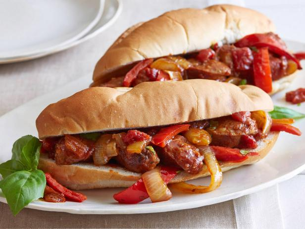

Italian Sausage and Peppers

Description
Sweet and Spicy Italian Sausage with red
and green bell peppers and onions, all married
together in a rich tomato sauce.
Enjoy on hoagie rolls as a sandwich, or just
spoon it straight out of the bowl!
Ingredients
- 2 lbs Italian Sausage (Sweet and Spicy)
- 2 red bell peppers
- 2 green bell peppers
- 2 large yellow onions
- Many other things (I'm not typing all of
this out)
Steps
- Brown the sausage on all sides (just browning--not cooking!)
- Take the sausages out and let them rest
- Throw the onions and peppers in and cook for a few minutes
- Add some garlic to it and cook for 30 seconds
- Add tomato paste and cook for 30 seconds
- Add the marsala wine and scrape the bottom of the pan
- Bring to a low simmer for a while
- Slice up the sausage into one-inch pieces and throw it in
- Let simmer until it's thickened and perf--about an hour
- Carve up some bread if you're so inclined and scoop it in, or just scoop into a bowl
- Enjoy!